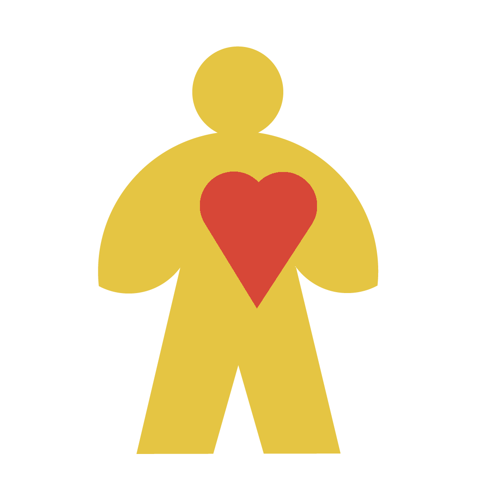
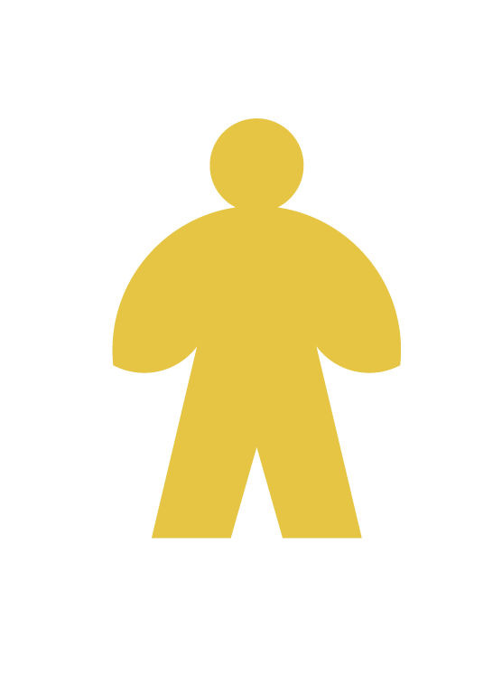
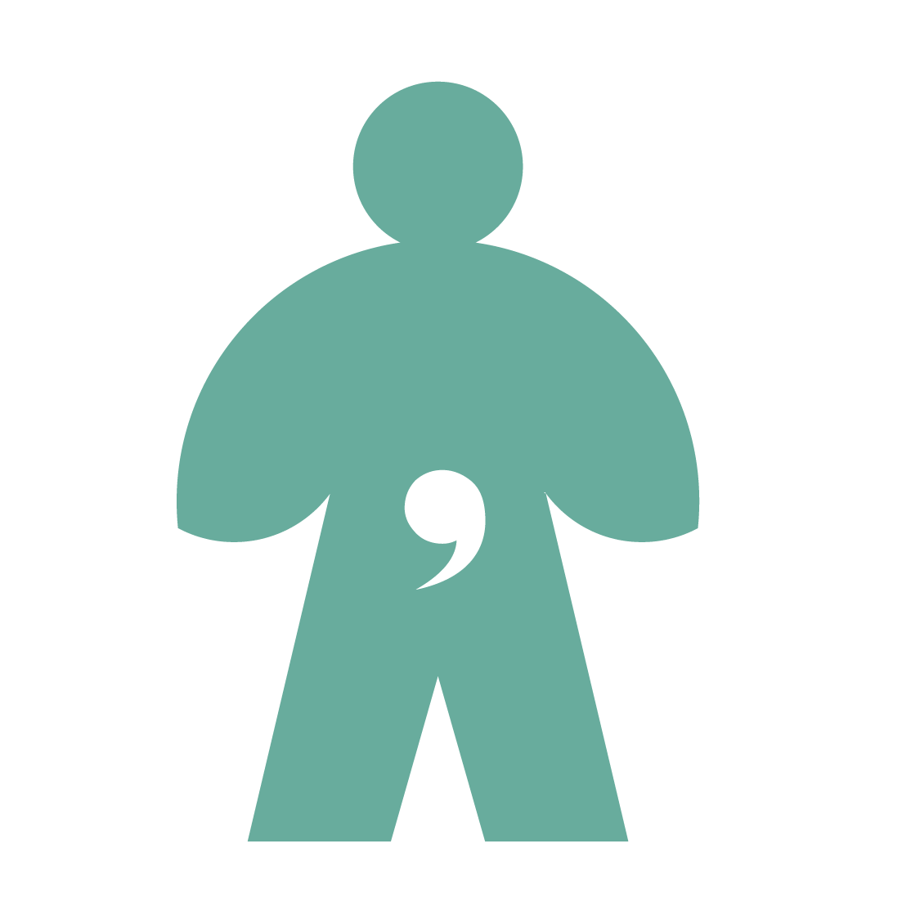
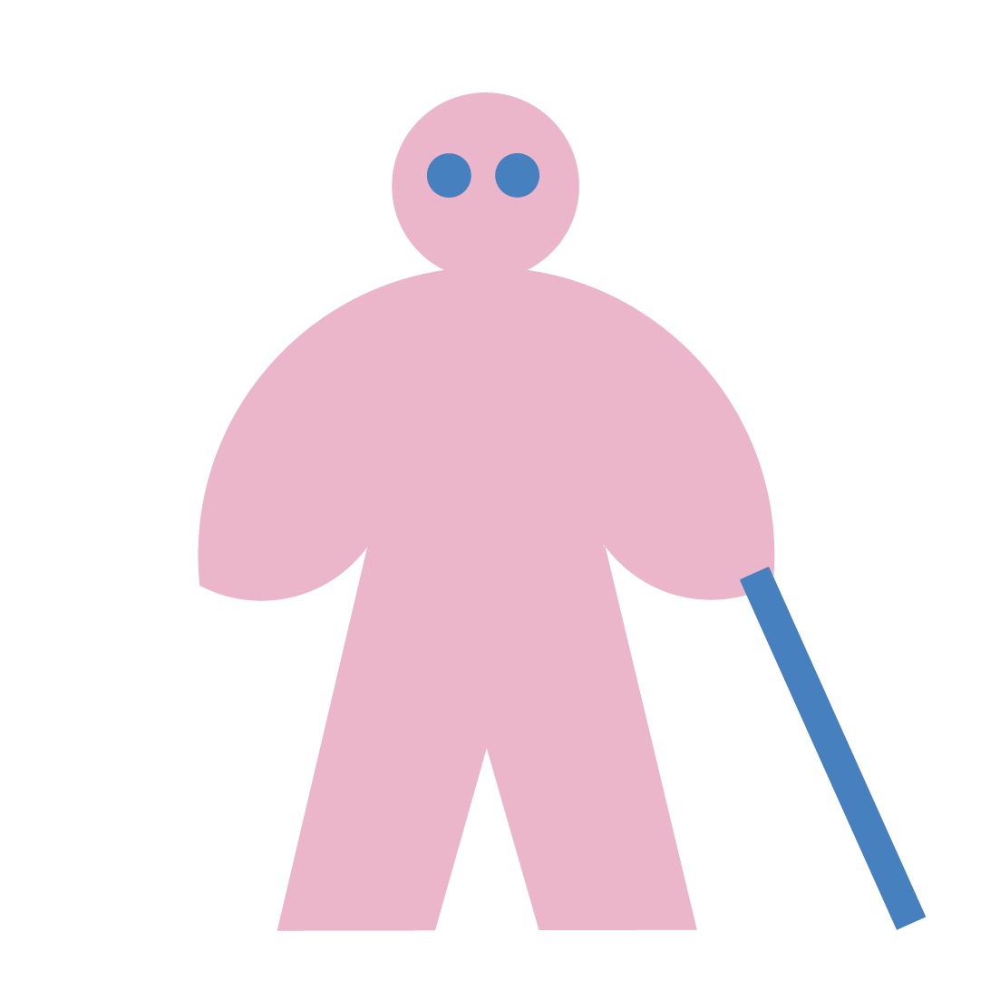
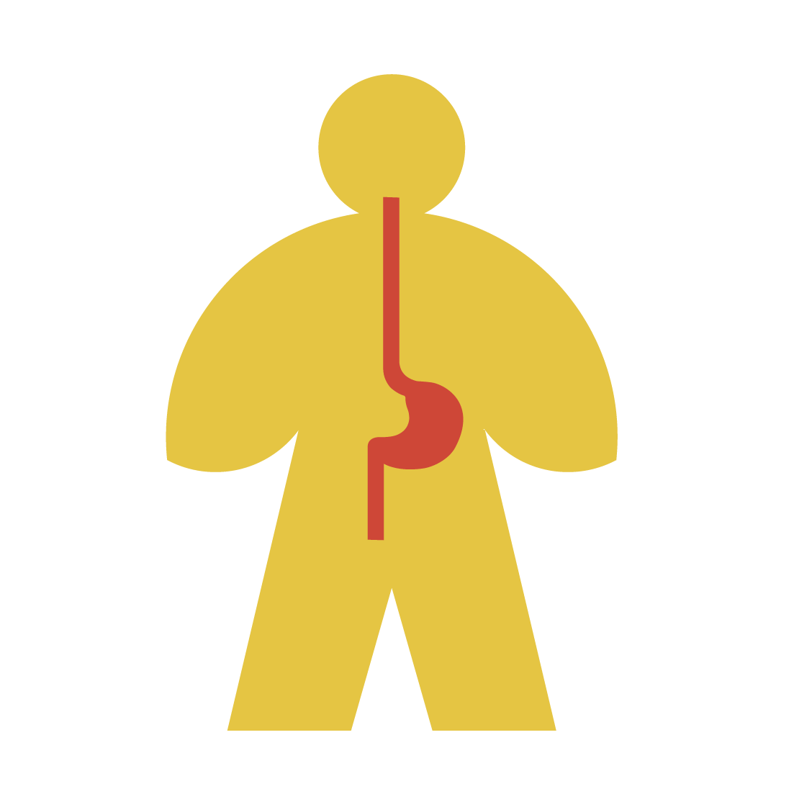

What is Invisible ?

Invisible needs are often difficult to recognize from appearance alone.
They can include anxiety, sensory sensitivity, chronic pain, fatigue, mental health conditions, reduced stamina, or temporary physical discomfort.
Unlike visible conditions, these experiences are not always
immediately understood by others.
Yet the need for patience, space, rest, or support still
exists.


My pregnancy may not be visible yet, but if I feel dizzy or
unwell, could you offer me a seat?
Early Pregnancy
I may need extra space to rest when I feel physically overwhelmed.
Heart Condition


I may experience sensory input more intensely than others. Please
lower the volume to help me feel more comfortable.
Sensory Sensitivity
Sometimes discomfort can come suddenly. I may need a seat or a
place to lean and rest.
Menstruation


Sudden dizziness can happen to anyone and may affect balance.
Dizziness
I don’t always want my prosthesis to be noticed. Most of the time
I can walk and stand independently, but I may move more slowly.
Prosthesis


I stayed up all night. I may look okay, but my energy can run out
quickly.
Fatigue
Some injuries are not immediately visible. During recovery, simple
daily actions may require more effort.
Hand Injury


I may not notice obstacles or signs right away. A little guidance
can help me move more confidently.
Visual Impairment
I may miss announcements or parts of conversations. Speaking
clearly can help me understand.
Hearing Impairment


My condition isn't always visible. Sometimes I may need to eat,
rest, or sit unexpectedly.
Diabetes
Discomfort can come suddenly and affect how long I can stand. I
may need a seat or a place to rest.
Stomach Discomfort


My bones may be more fragile than they appear. I may move more
carefully to avoid injury.
Osteoporosis
Some days require more energy than others. What looks simple may
not feel simple.
Depression


I may look fine on the outside while struggling inside. Patience
and understanding can make a difference.